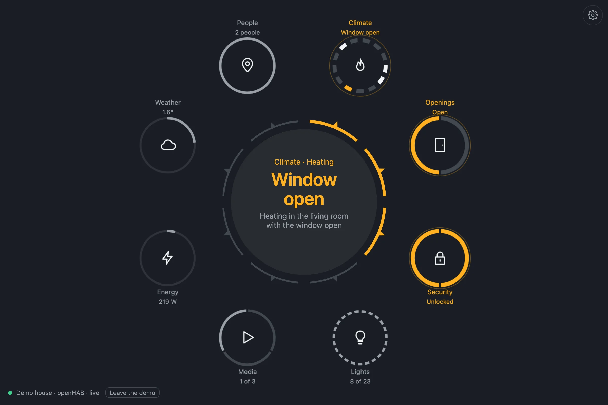
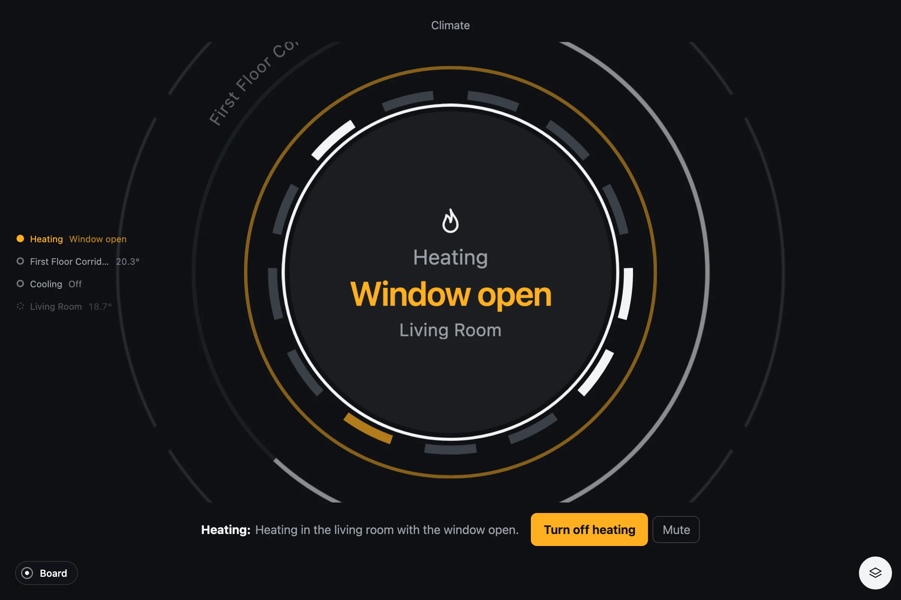
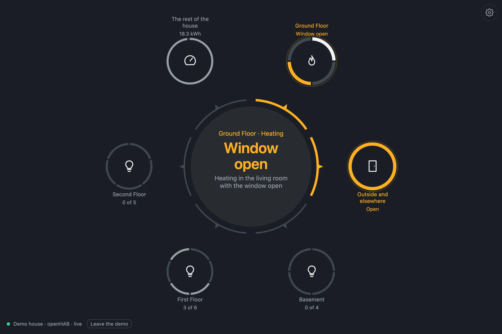

In use
openHAB
Pulse reads the items openHAB already has, through the semantic model: a Location, the Equipment in it, the Points of each and what they are about. Nothing is listed by hand; a home modeled under Settings › Model is ready. It lives in its own repository, with Pulse for Home Assistant: zumerlab/pulse-home.

Two ways in
- Served by openHAB
A folder in the
htmlof your configuration, open at/static/pulse/. The page reads the openHAB that serves it: no CORS, no proxy, nothing to point anywhere. A Web Frame page in Main UI puts it in the sidebar. - The app
A standalone page that reads any openHAB by its address, with an API token when it asks for one. For a kiosk, a round screen, a tablet on the wall.
Both are static files over the REST API and its event stream: no binding, no add-on, nothing on the server. Install, the parameters and troubleshooting are in the openHAB section of the README.
The systems
| System | What it looks for |
|---|---|
| Lights | Every light source as a segment; the one chosen as a dial, in its color; past twelve, a swarm with a tick per light |
| Climate | The HVAC of each room: its setpoint as a dial, with the room's windows on its timeline; heating and cooling with a segment per room; the coldest room with its day |
| Openings | Windows and doors by their contact; roller shutters, the one chosen as a dial |
| Security | Locks; the alarm points of your devices: smoke, water, gas |
| Media | Players, with the cover of what plays from their Image point; the input as a choice; the volume |
| Energy | The energy management system: load, grid, battery and solar power, the state of charge, the day in kWh with its forecast; an inverter by plane |
| Weather | The weather service: temperature on a band, humidity, the wind as an arrow, the condition, its warnings by severity; the sun's height and azimuth from Astro, and its next rising or setting in the home's time |
| People | Every Location item on a map; each person an object of their own; presence as who is home |
By room, each Location of the model is one object with those channels read within it, floor by floor; the garden and the garage, on no floor, are outside and elsewhere.
Alerts are rules over states
The interesting ones cross systems. Heating with that room's window open. A door open, or a lock unlocked, at night: night is the sun below the horizon as your home computes it. A room under sixteen degrees. More than four kilowatts from the grid, the home battery under fifteen percent. A device's alarm, a weather warning by its severity. Each alert comes with its action, a real command: turn that heating off, lock, or just "Got it".

Command feedback
A control pulses while the command is on its way and settles when openHAB reports the new state over its event stream. A refused command keeps a red outline and a Retry. Times are told in the home's time zone, the one openHAB reports, and a state uses the words its own state description gives it.
Try it without openHAB
Pulse for the home carries the openHAB project's demo house, as it stood on demo.openhab.org one evening, as an interactive demo source: a light that turns on, a heating that turns off, a speaker that pauses. The tests run over it, and so can you: open it online, or npm run dev in its repository, then the gallery.
